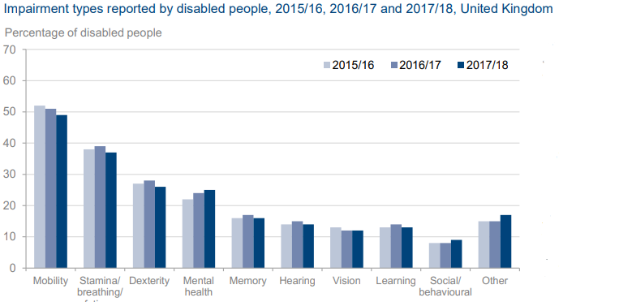

In 2017, the UK government recorded disabled people make up for 18 percent of the UK’s working-age population (≈7.7 million), with the highest impairment type being related to mobility. A disabled individual is significantly less likely to be employed than a person without a disability and is reflected in the large employment gap (≈30%) between the two.
It is essential to both the economy as well as peoples’ quality of life to get more of the disabled into the county’s labour force, and we believe Technology to be an important enabler in that regards. This is reflected by some of the projects we explored through the course of this assignment. So, we hope you enjoy reading!